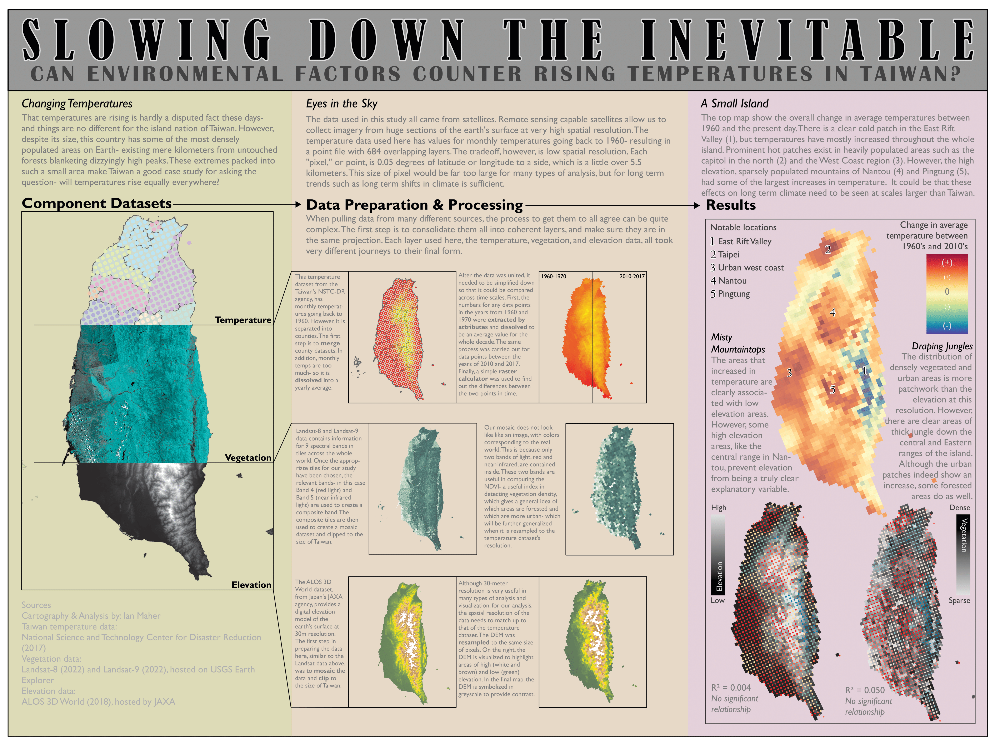

European Security Alert Summary
Continuing on a research paper I published in 2022, I wanted to look further into the changing temperatures on the island of Taiwan. For such a small country, Taiwan hosts sunning diversity in both human and natural landscapes. In an area less that 1/7 the size of Oregon, 23 million people live in some of the most densely packed cities in the world. Short distances away, jungle-cloaked mountains tower up to 12,967 ft (3,952 m) above the surrounding land. I used temperature data that dated back to 1960, as well as data on elevation obtained from the Japanese ALOS program and vegetation data obtained from Landsat to perform an analysis on whether these factors would affect the rate of change for temperatures here over time. Because of the large quantity of the data, which was over 670 layers per point, I needed to integrate Python automation into my analysis. I was not able to find a strong correlation, however, I think this analysis highlights some interesting things about the interactions of factors in our environment. I was able to present my findings at the GIS in Action Conference in April 2023, and was granted an award by the ASPRS Cascadia Region.
Skills used: raster analysis, data management, Python, statistics, presentation
About Me
My name is Ian Maher. I am a recent graduate of the GIS Certificate Program at Portland Community College. I studied Zoology at Oregon State University for my undergraduate degree. I am passionate about the outdoors and our natural environment. I have many hobbies including scuba diving, coding, making music, hiking, reading, and traveling. I recently moved back into the United States after living abroad for several years and I am ready to begin a career as a GIS specialist. I love making maps and engaging with mapping projects in my free time. Mapping is a powerful tool for visualizing data and discovering patterns, as well as communicating messages effectively. I hope you enjoy some of the maps I have made.